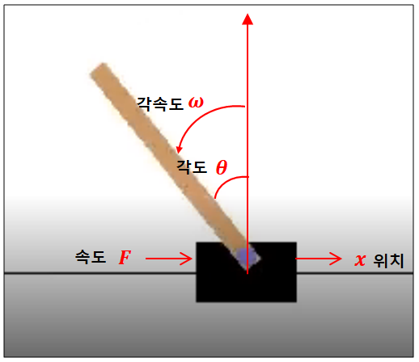

[강화학습 기초 6-1] DQN을 움직이는 세 가지 장치
DQN의 오차 함수와 동작 순서, 카트폴 환경, 입실론 탐욕 정책 · 리플레이 메모리 · Q 신경망을 정리합니다.
강화학습 기초 시리즈 · 12편 중 11번째 글
연재 목차 보기
대표가 쓴 『개발자답게 코드로 익히는 강화학습』(프리렉, 2025)의 내용을 블로그에 맞게 정리해 연재합니다.
DQN(Deep Q-Network)은 Q러닝의 Q표를 신경망으로 바꾼 알고리즘입니다. 2015년 아타리 게임에서 사람 수준의 점수를 내면서 강화학습 붐을 일으켰고, 구조가 이해하기 쉬워 지금도 첫 번째로 배우는 알고리즘입니다.
DQN이 줄이려는 오차
5장에서 본 함수 근사에 Q러닝의 목표값을 넣으면 DQN의 오차가 됩니다.
앞부분은 실제로 한 걸음 해 보고 얻은 목표값, 뒷부분은 신경망이 예측한 값입니다. 프로그래머는 목표값만 계산해서 넘겨 주면 되고, 예측값과의 차이를 줄이는 일은 신경망 학습(model.fit)이 알아서 합니다.
DQN이 한 스텝에 하는 일
- 현재 상태를 신경망에 넣어 행동별 Q값을 얻습니다.
- Q값이 가장 큰 행동을 고릅니다(가끔은 무작위로).
- 그 행동을 환경에 보내 보상과 다음 상태를 받습니다.
- 목표값 R + γ max Q(다음 상태)를 계산합니다.
- 예측 Q값이 목표값에 가까워지도록 신경망을 학습합니다.
- 다음 상태로 넘어가 반복합니다.
실습 환경: 카트폴

카트폴(CartPole)은 막대가 세워진 수레를 왼쪽이나 오른쪽으로 밀어 막대가 쓰러지지 않게 하는 게임입니다. 손바닥 위에 막대를 세우고 버티는 놀이와 같습니다.
| 항목 | 내용 |
|---|---|
| 상태 (4개) | 수레 위치, 수레 속도, 막대 각도, 막대 각속도 |
| 행동 (2개) | 왼쪽으로 밀기, 오른쪽으로 밀기 |
| 보상 | 버틴 스텝마다 +1 |
| 종료 | 막대가 약 12도 넘게 기울거나 수레가 화면 밖으로 나가면 실패, 500스텝을 버티면 성공(CartPole-v1) |
장치 1. 입실론 탐욕 정책: 가끔은 엉뚱하게
처음부터 Q값이 가장 큰 행동만 고르면, 아직 덜 배운 신경망의 판단에 갇혀 다른 길을 시도해 보지 못합니다. 그래서 확률 ε(입실론)으로는 무작위 행동을 하고, 나머지는 Q값이 가장 큰 행동을 합니다. 이렇게 새로운 시도(탐험)와 아는 것 활용(탐욕) 사이의 균형을 맞춥니다.
if np.random.rand() < epsilon:
action = env.action_space.sample() # 탐험: 무작위 행동
else:
action = np.argmax(q_values) # 탐욕: Q값이 가장 큰 행동학습이 진행될수록 신경망이 믿을 만해지므로 ε을 점점 줄입니다(decay). 다만 0까지는 줄이지 않고 0.05 같은 최솟값을 남겨 두어 탐험을 완전히 멈추지 않게 합니다.
장치 2. 리플레이 메모리: 경험을 섞어서 복습
방금 겪은 일만 연달아 학습하면, 비슷한 상황의 데이터가 몰려서 신경망이 한쪽으로 치우칩니다. 나쁜 상황에 빠지면 나쁜 데이터만 계속 배우기도 합니다.
리플레이 메모리는 경험(상태, 행동, 보상, 다음 상태, 종료 여부)을 일정한 크기의 저장소에 쌓아 두고, 학습할 때 무작위로 꺼내 씁니다. 저장소가 차면 가장 오래된 경험부터 지웁니다. 순서가 섞이니 데이터 사이의 시간 연관성이 사라지고, 같은 경험을 여러 번 학습에 쓸 수 있어 효율도 좋아집니다.
장치 3. 신경망: Q표 대신
상태 4개를 입력받아 행동 2개의 Q값을 출력하는 작은 신경망을 씁니다. 출력층은 Q값이 음수일 수도 있으므로 활성 함수 없이(linear) 둡니다.
| 층 | 크기 | 활성 함수 |
|---|---|---|
| 입력 | 4 (상태) | — |
| 은닉 | 24, 24 | ReLU |
| 출력 | 2 (행동별 Q값) | linear |
원 논문의 DQN에는 목표값을 계산할 때 쓰는 신경망을 따로 두는 타깃 네트워크라는 장치도 있습니다. 이 연재의 코드는 이해를 위해 하나의 신경망으로 단순화했습니다. 다음 편에서 이 세 장치가 들어간 카트폴 코드를 한 줄씩 읽어 봅니다.